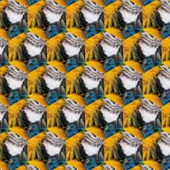

ہیکساگون ٹائلنگ

لیئر کے درمیانی حصے کو ہیکساگون ٹائلوں میں دہراتا ہے جو اسکرین بھر دیتی ہیں۔
سیٹنگز
| سیٹنگ | قسم | رینج | ڈیفالٹ |
|---|---|---|---|
| اسکیل | نمبر | 0.05 سے 10 تک | 1 |
| اینگل | زاویہ | -3600° سے 3600° تک | 0° |
| مرر | آن یا آف | – | آف |

لیئر کے درمیانی حصے کو ہیکساگون ٹائلوں میں دہراتا ہے جو اسکرین بھر دیتی ہیں۔
| سیٹنگ | قسم | رینج | ڈیفالٹ |
|---|---|---|---|
| اسکیل | نمبر | 0.05 سے 10 تک | 1 |
| اینگل | زاویہ | -3600° سے 3600° تک | 0° |
| مرر | آن یا آف | – | آف |